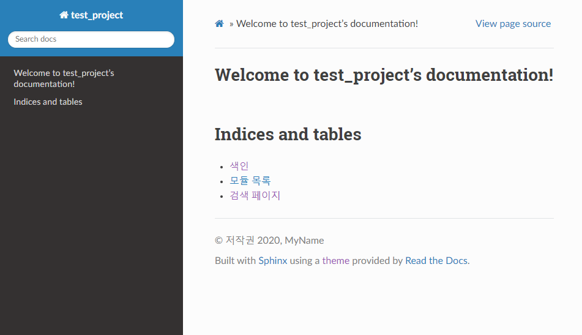

OS : Windows 10
python : 3.79
Sphinx : v3.2.1
conda env
를 기본환경으로 쓰여진 문서입니다.
1. Sphinx 란 무엇인가?¶
프로그래머들이 어려워 하는 문서작성 을 원할하게 도와주는 훌륭한 도구
다양한 포맷지원(HTML, LataX, ePub, PDF …) 설명서, 계획서, 메뉴얼 등 작성에 주로 사용
2. 설치하기 및 실행하기¶
참고
python version 3.6 이상에서 지원 ! Docutils 와 Jinja 기반으로 한다.
참고
version과 환경에 따라 다를 수 있다.
아래중 한가지 방법을 사용해서 설치하면 된다.¶
Anaconda
$ conda install Sphinx
pypl
$ pip install sphinx
Deban / Ubuntu ( pypl, conda 설치가 안되있다면.)
$ apt-get install python3-sphinx
2.1 빠른 시작.¶
$ sphinx-quickstart
Welcome to the Sphinx 3.2.1 quickstart utility.
Please enter values for the following settings (just press Enter to
accept a default value, if one is given in brackets).
Selected root path: .
You have two options for placing the build directory for Sphinx output.
Either, you use a directory "_build" within the root path, or you separate
"source" and "build" directories within the root path.
#빌드 디렉토리와 소스 디렉토리를 분리하여 관리할 것인지 질문.
# y 입력시 _source 와 _build 가 따로 생성됨. 작성자는 n 입력.
> Separate source and build directories (y/n) [n]: n
########################################################################################################
프로젝트 정보입력
########################################################################################################
# 1. Poject name : 프로젝트 명 입력
# 2. Author Name : 프로젝트 관리자(작성자)명 입력
# 3. prject release : 프로젝트 버전 입력.
The project name will occur in several places in the built documentation.
> Project name: test_project
> Author name(s): MyName
> Project release []: 1.0
If the documents are to be written in a language other than English,
you can select a language here by its language code. Sphinx will then
translate text that it generates into that language.
########################################################################################################
# 문서 언어 설정
########################################################################################################
# 기본값은 영어 en, 작성자는 ko 입력.
For a list of supported codes, see
https://www.sphinx-doc.org/en/master/usage/configuration.html#confval-language.
> Project language [en]: ko
#설정이 완료되면 기본 파일 생성.
Creating file D:\development\test\source\conf.py.
Creating file D:\development\test\source\index.rst.
Creating file D:\development\test\Makefile.
Creating file D:\development\test\make.bat.
Finished: An initial directory structure has been created.
You should now populate your master file D:\development\test\source\index.rst and create other documentation
source files. Use the Makefile to build the docs, like so:
make builder
where "builder" is one of the supported builders, e.g. html, latex or linkcheck.
# 생성완료.
2.2 Html 문서 생성하기.¶
## html 문서 생성하기
## make.bat 가 생성된 root 경로에서 실행.
$ make html
Running Sphinx v3.2.1
loading translations [ko]... done
making output directory... done
building [mo]: targets for 0 po files that are out of date
building [html]: targets for 1 source files that are out of date
updating environment: [new config] 1 added, 0 changed, 0 removed
reading sources... [100%] index
looking for now-outdated files... none found
pickling environment... done
checking consistency... done
preparing documents... done
writing output... [100%] index
generating indices... genindexdone
writing additional pages... searchdone
copying static files... ... done
copying extra files... done
dumping search index in English (code: en)... done
dumping object inventory... done
build succeeded.
The HTML pages are in build\html.
#빌드가 되고 html파일이 생성된것을 확인할 수 있다.
그러면 이렇게 똬 !!¶
## path
test3/_build/html/index.html
2.3 테마 변경 하기¶
https://sphinx-themes.org/ 테마 모음 참고
개인적으로 가장 깔끔해보이는 sphinx_rtd_theme를 적용해보겠다.
# 1. sphinx_rtd_theme 테마 설치
$ pip install sphinx_rtd_theme
# 2. quick start로 만들어진 작성자 기준 test3/conf.py 파일 수정.
# 아래 소스코드가 주석으로 되어있는데 주석을 해제한다.
import os
import sys
sys.path.insert(0, os.path.abspath('.'))
# 테마를 변경한다.
# html_theme = 'alabaster' # 변경전
html_theme = 'sphinx_rtd_theme' # 변경후
# 3. conf.py 수정 후 저장
# 4. test3 디렉토리로 이동
# make html 명령어로 sphinx_rtd_theme테마의 html 페이지 생성.
$ cd /d/development/test/test3
$ make html
# build/html 경로로 이동하여 index.html파일을 열어 확인.(상단의 페이지 출력)